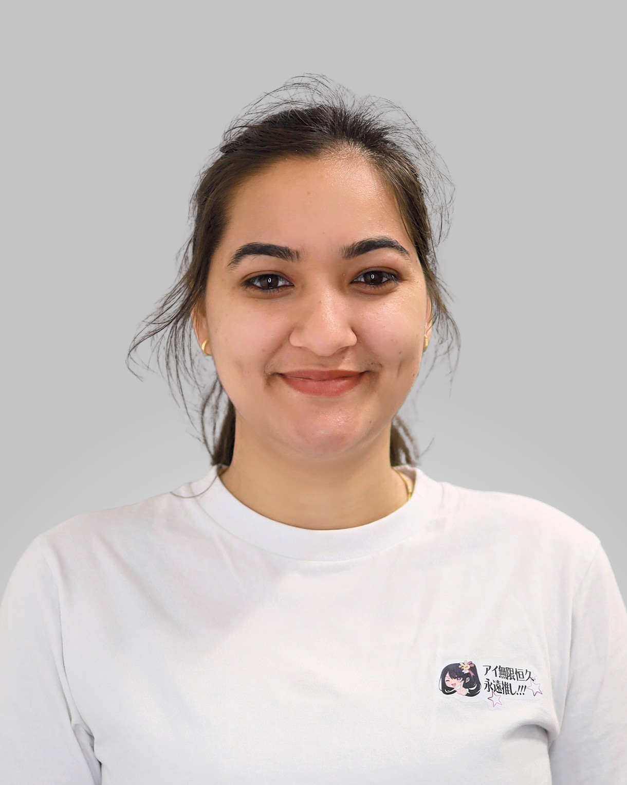

University of Maryland, Baltimore County
Ph.D. in Computer Science
August 2026 - Present

Ph.D. Student in Computer Science
University of Maryland,
Baltimore County (UMBC)
I am a first-year Ph.D. student in Computer Science at the University of Maryland, Baltimore County (UMBC). My research interests include AI security, large language model (LLM) security, retrieval-augmented generation (RAG) security, and automated penetration testing.
I am interested in understanding how AI systems fail under adversarial conditions and developing methods to make them more secure and reliable. My current projects investigate defenses against prompt injection in RAG chatbots and learning from past failures in LLM-based penetration-testing agents.
I am investigating defenses that identify suspicious passages before they reach a RAG chatbot's language model. I will compare retrieval-side defenses with prompt-based approaches under simple and adaptive attacks, measuring both attack success and accuracy on normal questions.
I am studying whether remembering past failures can improve LLM-based penetration-testing agents. I will turn recorded failures into structured memory entries and compare the agent's task completion with and without this memory.
Ph.D. in Computer Science
August 2026 - Present
M.S. in Data Science
September 2022 - May 2024
M.S. in Mathematics
August 2018 - December 2020
CMSC 203: Discrete Structures, UMBC
August 2026 - Present
I grade assignments and provide feedback to students, supporting course instruction and student learning.